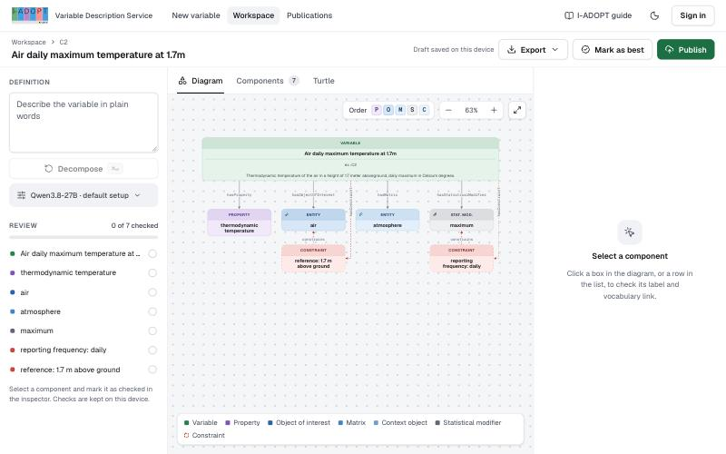

Arvin Rastegar
AI engineer in Munich
I build LLM applications end to end, from the model pipeline and its evaluation to the web app and the deployment. Right now I work on tools that help scientists describe their data, at KIT and the GO FAIR Foundation.
Projects
I-ADOPT Variable Description Service
Turns one sentence about a measurement into structured data that other systems can read. I am the technical lead and main developer.

Evaluation lab
Compares language models on one benchmark and optimizes the prompt step by step, which doubled the score.
Skills
Python, FastAPI, LLM APIs, prompt evaluation, React, TypeScript, PostgreSQL, Docker, GitHub Actions, RDF